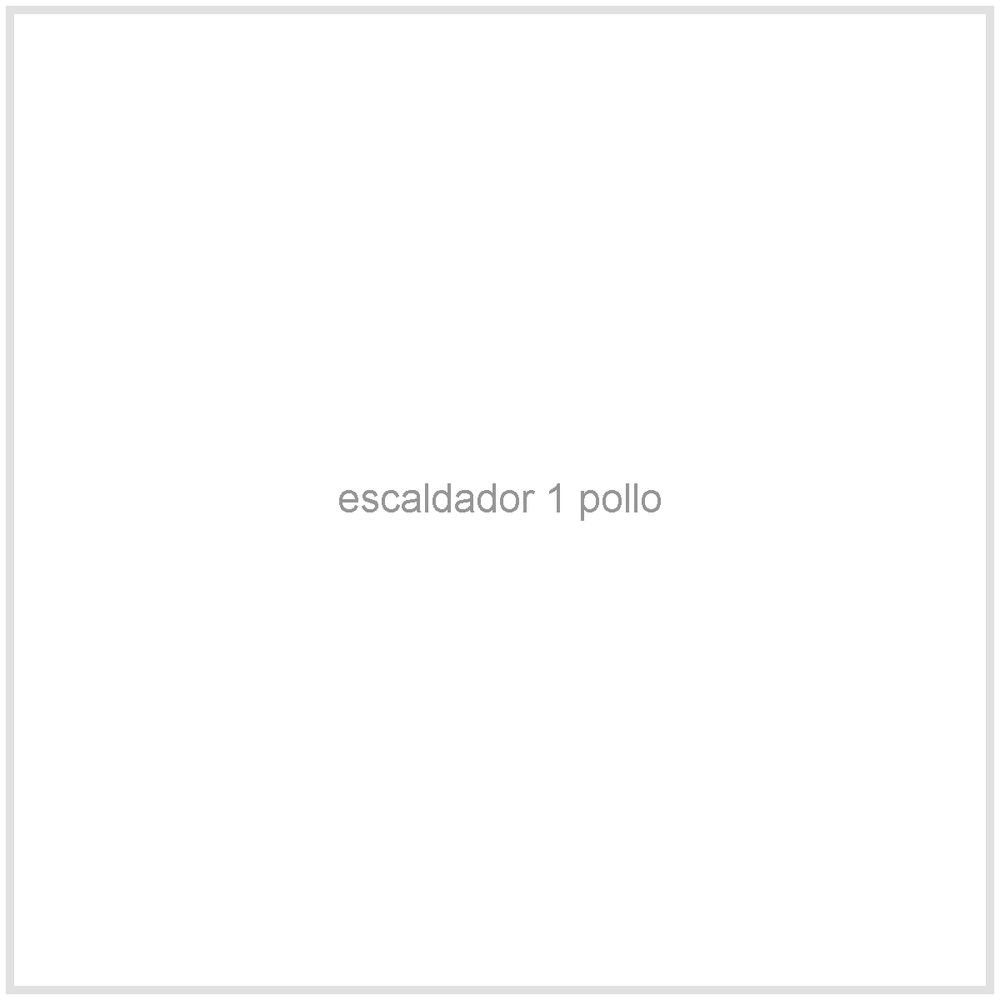
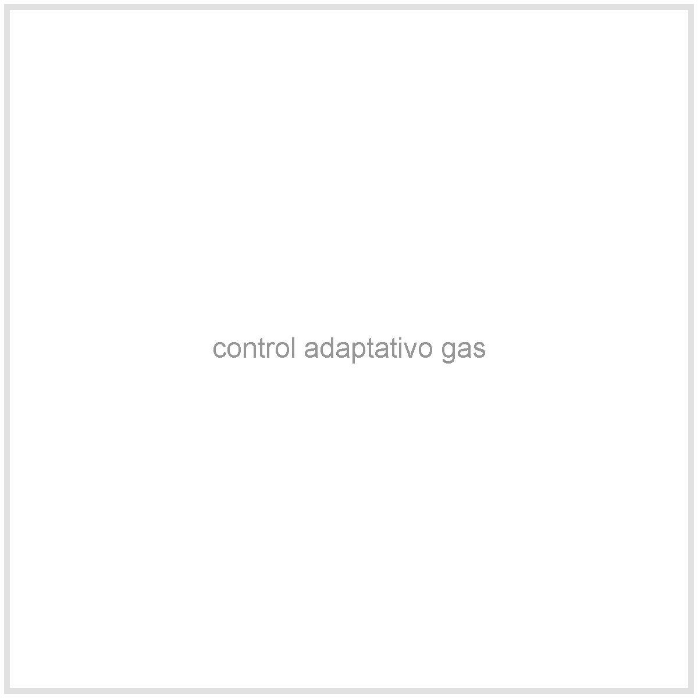
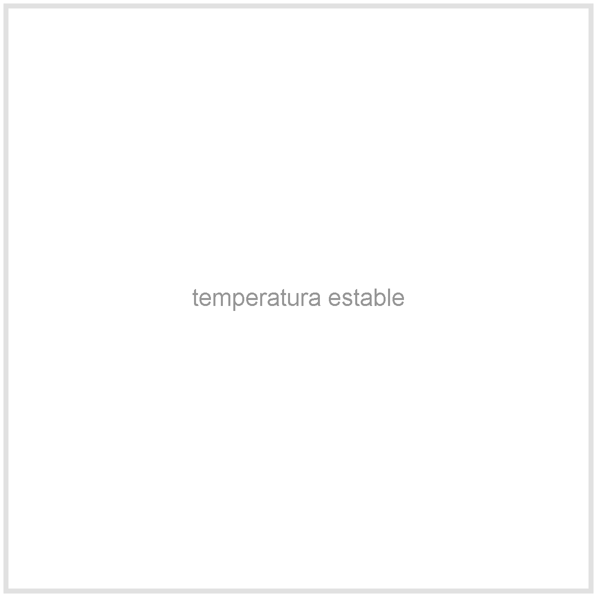
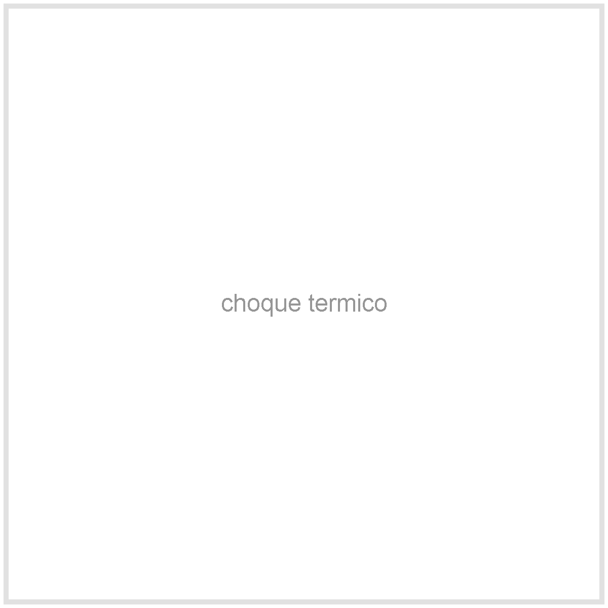
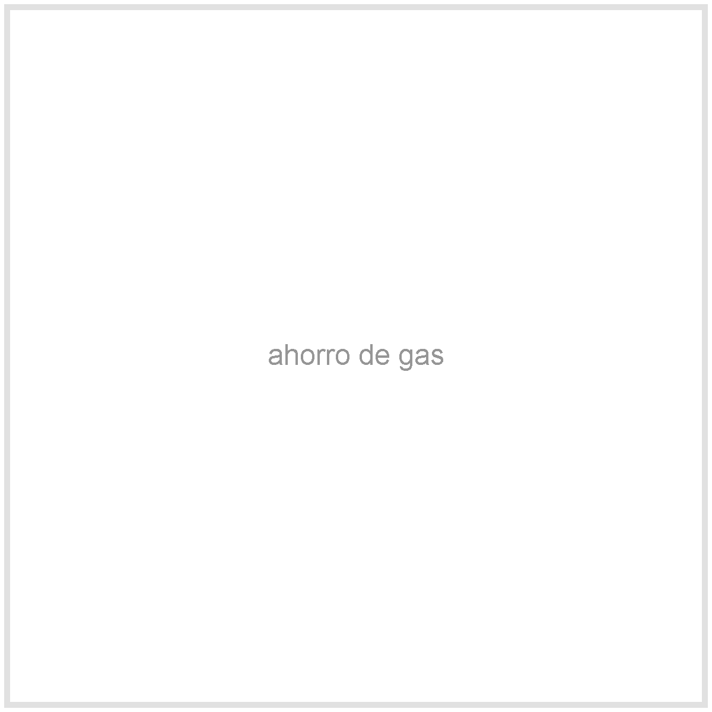
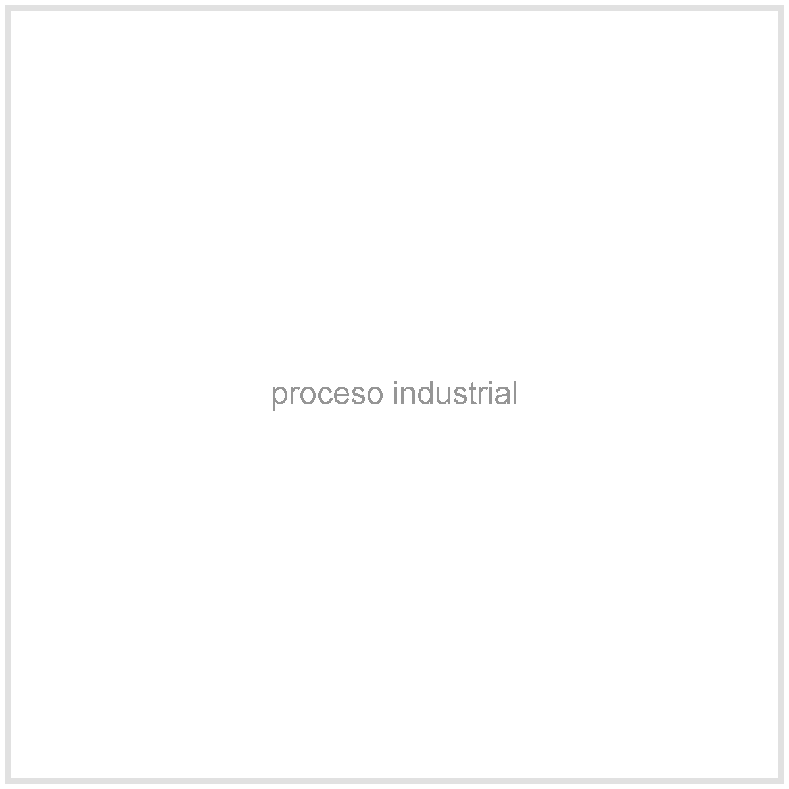
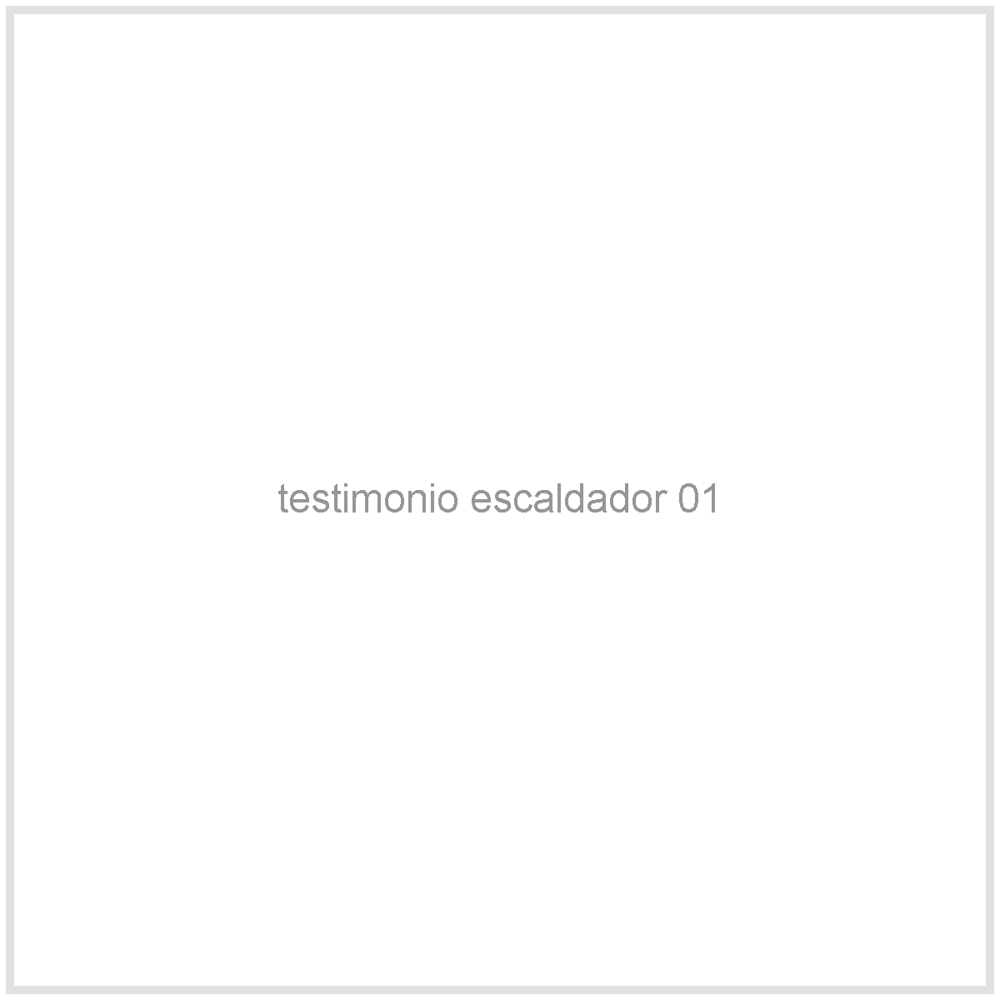
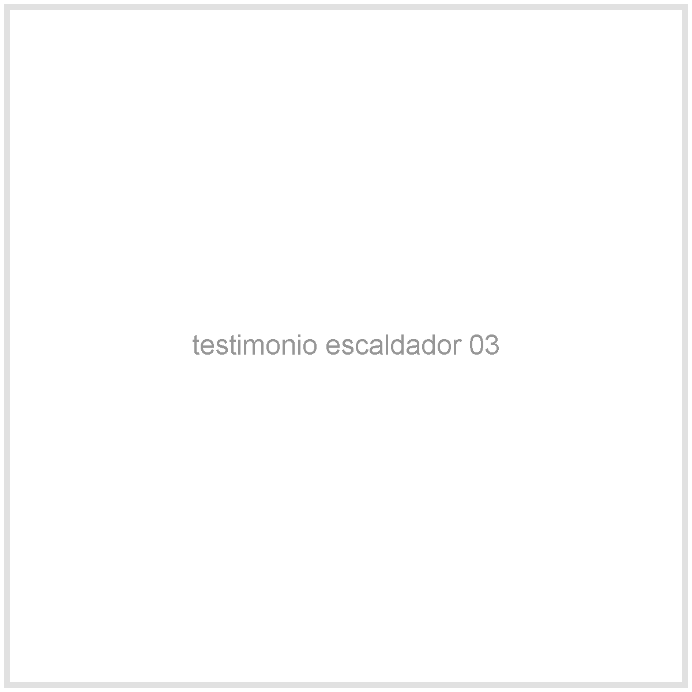

Escaldado controlado
Temperatura estable antes de pasar a la peladora
El escaldado prepara la pluma para soltarse mejor. Si la temperatura
sube y baja sin control, pierdes tiempo, gas y consistencia en el
pelado.
Gas con control adaptativo
Electrovalvula
Piloto automatico
Elegir escaldador



Elige y pide por WhatsApp
La funcion es la misma, cambia la capacidad
Elige el tamaño segun tu flujo. Ambos trabajan a gas con control adaptativo para encendido y apagado automatico.
Control de temperatura
El agua caliente debe trabajar a tu favor
El controlador usa la memoria termica del agua para decidir cuanto tiempo encender y apagar el gas.
Por que importa
Un buen escaldado hace mas facil el pelado




Temperatura
Menos variacion
La estabilidad ayuda a que el choque termico sea mas consistente antes de pasar a la peladora.
Gas
Encendido inteligente
La electrovalvula abre y cierra el gas segun lo que ordena el controlador.
Proceso
Mas parecido a una planta
Las empresas grandes controlan temperatura y tiempo para no depender de tanteo manual.
Comparacion de calentamiento
El metodo de calor cambia tu costo y tu resultado
La meta no es solo calentar agua. Es sostener temperatura para escaldar mejor, gastar menos combustible y pasar a la peladora con mas consistencia.
Leña
Calienta, pero cuesta controlar
- Puede ser facil de conseguir en algunas fincas.
- La temperatura sube y baja con facilidad.
- Exige atencion constante y genera humo, ceniza y mas limpieza.
Aceite quemado
Riesgo operativo y de limpieza
- Puede parecer una opcion economica al inicio.
- Complica el control de temperatura y la repetibilidad.
- Aumenta humo, residuos y riesgos en el area de trabajo.
Gas sin control
Mas limpio, pero todavia manual
- Calienta mas limpio que lena o aceite quemado.
- Si queda prendido de mas, desperdicias gas.
- Si apagas tarde o temprano, la temperatura se vuelve irregular.
Gas con control automatico
Hasta 70% menos consumo al sostener temperatura
- El controlador ajusta encendido y apagado segun la memoria termica del agua.
- La electrovalvula y el piloto automatizan el paso de gas.
- La chaqueta de fibra de vidrio sellada conserva calor y evita que la olla se enfrie rapido.
1 y 3
Capacidades
Elige entre tamaño de 1 pollo o 3 pollos segun tu flujo de trabajo.
Gas
Control adaptativo
El controlador decide encendido y apagado para aprovechar mejor la temperatura acumulada.

Cliente verificado“Con temperatura mas estable el pelado sale mas parejo.”
Control de gas“Ya no tengo que estar prendiendo y apagando a ojo todo el tiempo.”

Ruta Allpa“Cuando mejore escaldado, la peladora trabaja mejor y pierdo menos tiempo.”
Preguntas antes de comprar
Resuelve las dudas normales antes de pedir
Despues del escaldado viene el pelado
Si estabilizas temperatura, la peladora puede trabajar con menos esfuerzo y mejor resultado.
Ver peladora